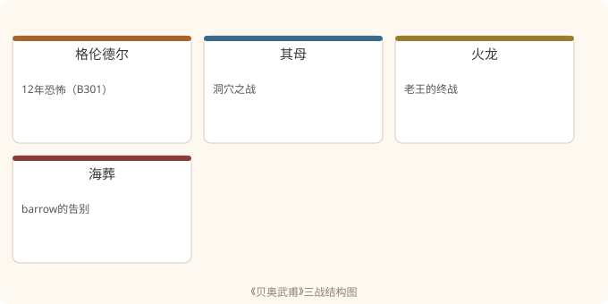

贝奥武甫
一、基本信息
| 作者 | 佚名（Anglo-Saxon 匿名诗人） |
|---|---|
| 成书/出版 | 创作约700—750年间；存世唯一手稿约1000年（Britannica） Beowulf — Encyclopaedia Britannica（百科全书） |
| 国别/地区 | 英国 |
| 时代 | 古代 · 盎格鲁-撒克逊时代 |
| 体裁 | 英雄史诗 |
| 语言 | 古英语 |

《贝奥武甫》三战结构图（主题·结构图）
二、创作背景
Britannica（B301）：'the highest achievement of Old English literature and the earliest European vernacular epic'（古英语文学的最高成就、最早的欧洲俗语史诗）。
手稿（B301）：'preserved in a single manuscript that dates to circa 1000'（Cotton MS Vitellius A XV）；创作'between 700 and 750'；1815年才首次印刷（B301）。
三、内容脉络
第一部分：贝奥武甫为丹麦王赫罗斯加除怪——格伦德尔12年恐怖（B301：For 12 years the creature terrorizes Heorot）、扭断其臂（B301）、杀死其母于洞穴（B301：They struggle in her dry cave at the mere's bottom）。
第二部分：老王贝奥武甫与火龙——毒牙致命（B301：mortally wounded from a bite in the neck）；威格拉夫继任（B301：names Wiglaf his successor）；海葬于barrow（B301）。
恐惧：'without Beowulf, Geatland will be invaded by nearby tribes'（B301）。
四、主要人物表
| 人物 | 身份 | 说明 |
|---|---|---|
| 贝奥武甫 | 耶阿特王子→老王 | （B301） |
| 格伦德尔 | 沼泽怪物 | 12年恐怖（B301） |
| 火龙 | 守宝龙 | 最后的敌人（B301） |
| 威格拉夫 | 继任者 | （B301） |
五、主题与艺术特点
- 英雄与死亡的史诗（B301）。
- '最高成就、最早俗语史诗'（B301）。
- 氏族社会与继任危机（B301：Geatland 恐惧）。
六、影响与评论
- Britannica：'the highest achievement of Old English literature and the earliest European vernacular epic'（B301）。
Beowulf — Encyclopaedia Britannica（百科全书） - 托尔金《魔戒》与其研究（通说待核——B301 未载）。
Beowulf — Encyclopaedia Britannica（百科全书）
七、阅读建议
难点
- 古英语头韵体（中译转转）。
- 族谱与盾形纹章（氏族谱）。
- 《贝奥武甫》（人民文学出版社/译林出版社版本，通说待核）。
- 英文原版（公有领域）。
西方史诗源头之一（先于《神曲》传统）。
八、待核实
- 创作年代（700—750 vs 8世纪说）核对。
- 3182行说（通说）待核。
- 托尔金1936年讲座《贝奥武甫：怪物与批评家》待核。
本页主要来源
相关作品：伊利亚特埃涅阿斯纪哈克贝利·费恩历险记